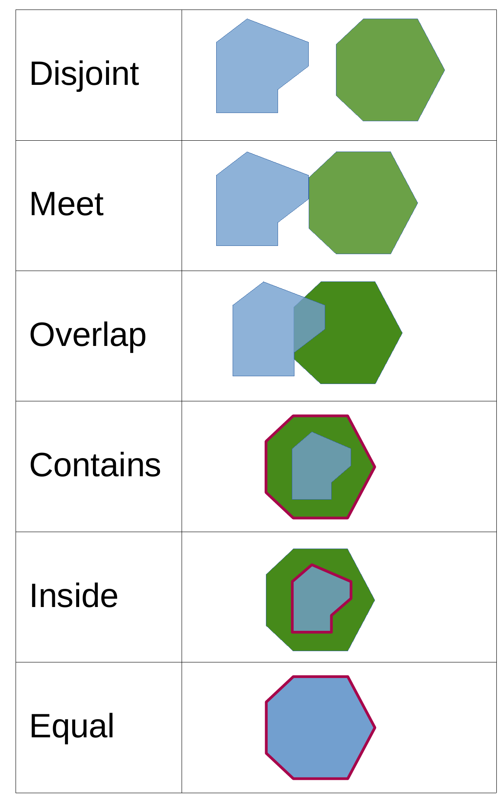

Bevor wir in die Praxis einsteigen, ein kurzer theoretischer Rückblick: Ein Datenmodell dient dazu, die reale Welt im GIS repräsentieren zu können. Da die Realität zu komplex ist, erfolgt dies durch eine Abstraktion. Je nachdem, ob wir diskrete Objekte (z. B. Bäume, Flüsse, Naturschutzgebiete) betrachten oder kontinuierliche Felder (z. B. Lufttemperatur, Höhe), bieten sich zwei verschiedene Datenmodelle an: das Vektormodell und das Rastermodell.In dieser Woche konzentrieren wir uns zunächst auf das Vektormodell, das Koordinatenpaare (x, y) nutzt, um geografische Objekte zu beschreiben. Da wir hier von diskreten Objekten sprechen, bedeutet dies, dass die Objekte klar definierte Grenzen haben und als einzelne, voneinander trennbare Einheiten existieren.Wir unterscheiden dabei drei grundlegende Geometrietypen:
Vektordaten erlauben die direkte Verknüpfung der Geometrie mit einer Attributtabelle, in der alle nicht-geometrischen Informationen (z. B. Baumart, pH-Wert, Flächennutzung) gespeichert werden.Um mit Vektordaten zu arbeiten, nutzen wir verschiedene Werkzeuge zur Analyse und Verarbeitung.
Wie analysieren wir jetzt die Daten? Oft wollen wir Daten nach bestimmten Kriterien selektieren oder sie weiterverarbeiten, um neue Informationen zu generieren. Eine Abfrage (Query) liefert eine Antwort oder eine Auswahl (z. B. „Welche Flächen sind Moore?“ \(\rightarrow\) Ergebnis: Es werden nur die Polygone ausgewählt, auf die diese Bedingung zutrifft). Die Originaldaten bleiben unverändert. Eine Operation (Processing) erzeugt ein neues Produkt oder verändert die Daten (z. B. ein Buffer \(\rightarrow\) Ergebnis: ein neuer Polygon-Layer). Je nachdem, ob wir uns für die Attribute, die Geometrien oder die Topologien (also die räumliche Anordnung) interessieren, lassen sich diese Vorgänge in drei Kategorien unterteilen:
Hier erfolgt die Auswahl von Geoobjekten rein auf Grundlage ihrer Attributwerte. Im Gegensatz zu räumlichen Analysen handelt es sich um nicht-raumbezogene Abfragen: Es geht also nicht darum, wo ein Objekt liegt, sondern welche Eigenschaften in der Attributtabelle hinterlegt sind.
In QGIS wird dies über den Ausdruckseditor gelöst, der entweder direkt über die Attributtabelle oder über die Funktion „Objekte nach Ausdruck auswählen“ angesteuert werden kann.
Um eine Abfrage zu erstellen, muss die fachliche Frage in eine formale Bedingung übersetzt werden. Dieser Prozess erfolgt in zwei Schritten:
Dafür müssen die gängigsten Operatoren bekannt sein:
Neben thematischen Abfragen zählt auch die Tabellenverknüpfung (Join) zu den thematischen Analysen. Ein Join ist eine Operation, bei der zwei Tabellen basierend auf einem gemeinsamen Merkmal (einem sogenannten Schlüsselfeld oder Unique Identifier) miteinander verknüpft werden. In der GIS-Praxis bedeutet das meist, dass eine externe Tabelle (z. B. eine Excel-Liste oder eine CSV-Datei) an einen räumlichen Layer angehängt wird. Das Ziel ist es, die Attributtabelle eines Objekts zu erweitern, ohne die Geometrie des Objekts zu verändern.
Im Gegensatz zu thematischen Analysen werten geometrische Abfragen nicht die Attributwerte aus, sondern die Geometrie der Geoobjekte. Hier steht die räumliche Form, die Größe oder die exakte Position im Vordergrund.
Geometrische Abfragen dienen dazu, Informationen über die Beschaffenheit eines Objekts oder seine räumliche Beziehung zu anderen Objekten zu erhalten, ohne den Datensatz zu verändern. Beispiele hierfür sind:
Neben diesen reinen Abfragen gibt es geometrische Standardverarbeitungswerkzeuge. Diese basieren zwar ebenfalls auf geometrischen Abfragen, liefern jedoch als Ergebnis neue, verarbeitete Daten (neue Layer). Zu den wichtigsten Operationen gehören:
Während geometrische Analysen konkrete Maße (wie Meter oder Hektar) berechnen, konzentrieren sich topologische Abfragen auf die räumlichen Beziehungen zwischen Objekten. Hier geht es nicht um Distanzen, sondern um die Prüfung spezifischer räumlicher Bedingungen (sog. topologische Prädikate).
Klassische topologische Abfragen prüfen beispielsweise:

Auf diesen grundlegenden Abfragen basieren komplexere topologische Analysen und Operationen:
Lade das Baumkataster, das Geo1 und die Stadtgrenzen von Münster herunter. Beantworte folgende Fragen:
Wieviele Eichen stehen im Münster Mitte?
Wo steht die nächstgelegende Birke vom Geo1 (Tip: z.B. Distance Matrix)